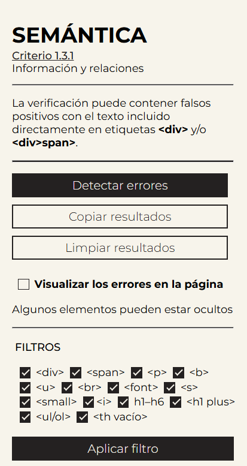

SEMANTICA
Verificador de estructura semántica para el criterio 1.3.1 de las WCAG
Esta extensión evalúa automáticamente estructuras comunes que infringen el criterio 1.3.1: Información y Relaciones de las WCAG 2.2, facilitando la identificación de elementos que podrían afectar la interpretación semántica del contenido por parte de tecnologías de asistencia.
Al presionar sobre el enlace, la extensión se descarga automáticamente.
Descargar ExtensiónLa extensión pesa 140 KB y se distribuye en formato .zip. Solo es necesario descomprimir e instalarla manualmente desde chrome://extensions.
Importante: Fase beta
Esta es una versión en desarrollo activo. Si bien ofrece resultados útiles, podrían producirse falsos positivos o interpretaciones parciales. Se recomienda verificación manual adicional como respaldo. Se recomienda realizar una verificación manual para confirmar la validez de los errores detectados.
¿Qué verifica la extensión?
La extensión detecta los siguientes errores semánticos comunes:
- Si hay etiquetas <div> o <span> con texto directo no semántico, ignorando los que están dentro de enlaces, botones, listas o con roles apropiados. Nota: Debido a la complejidad de ciertas estructuras HTML, podrían existir falsos positivos.
- Verifica si hay párrafos vacíos o con " - - ".
- Si hay etiquetas con <b>, <u>, <br>, <font>, <s>, <small>.
- Si hay etiquetas <i>
- Si hay encabezados vacíos.
- Si hay más de un encabezado <h1>.
- si hay listas vacías <ul> o <ol>.
- Si hay encabezados <ht> vacíos dentro de tablas.
En cada error, se muestra un fragmento del código para facilitar su localización y revisión.
Interfaz de Resultados
Los resultados se presentan organizados por tipo de error, dentro de bloques desplegables. Cada bloque incluye:
- Un resumen con la cantidad de errores detectados para esa categoría.
- Una lista detallada de errores individuales.
- Enlace directo al elemento problemático en la página (si es visible, sino muestra una alerta anunciando que está oculto).

También podés activar la visualización directa en la página, que resalta todos los elementos con error usando colores distintos por tipo.

Accesibilidad de la extensión
- Usa role="status" para anunciar resultados nuevos a lectores de pantalla.
- Se puede utilizar completamente mediante teclado.
- Incluye indicadores de foco visibles.
Opciones disponibles
- Filtrado por tipo de error (mediante casillas de selección).
- Filtrado por tipo de error (con color y etiqueta mediante Visualizar errores).
- Botón para copiar los errores al portapapeles.
- Botón para limpiar resultados (incluye limpieza automática al cambiar de URL en la mayoría de los sitios).
Más Información sobre el Criterio 1.3.1
Para una explicación completa del criterio 1.3.1, consultá la documentación oficial: Criterio 1.3.1 (WCAG2.2)
¡Tu Feedback es Valioso!
Esta extensión se encuentra en desarrollo activo. Te agradecería enormemente que la probaras y Si encontrás errores, falsos positivos o tenés sugerencias, escribime a: emilianomontani@gmail.com
¡Espero que esta herramienta te sea útil en tu trabajo diario! Muchas gracias por tu colaboración